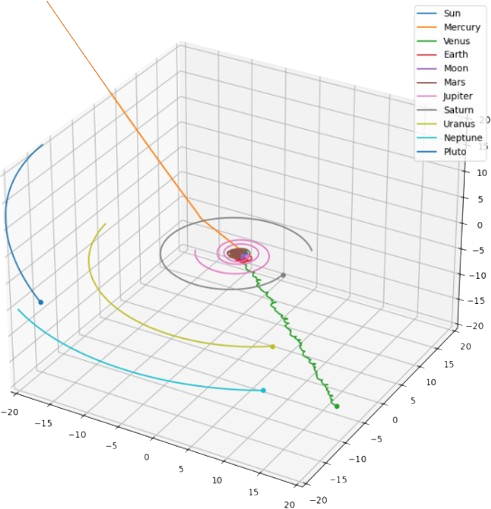

22-03-2024: we agnostics

"We read wordy books and indulge in windy arguments, thinking we believe this universe needs no God to explain it. Were our contentions true, it would follow that life originated out of nothing, means nothing, and proceeds nowhere.
Instead of regarding ourselves as intelligent agents, spearheads of God's ever advancing Creation, we agnostics and atheists chose to believe that our human intelligence was the last word, the alpha and the omega, the beginning and end of all. Rather vain of us, wasn't it?"
A 0.5% random perturbation of the initial positions and velocities between 01.01.1970 and 01.01.2000 means we don't have Mercury or Venus. Jupiter, Mars and Earth would spiral into the Sun. That's the end of the Solar System, as we know it. I was so engrossed in the simulation itself that I failed to consider the implications of the results.